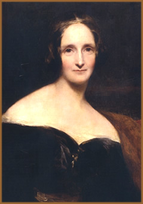

Mary Wollstonecraft Godwin nasceu
em 30 de agosto de 1797 na cidade de Londres. Era segunda filha
de Mary Wollstonecraft, feminista, educadora e escritora; e primeira
filha de William Godwin, escritor, jornalista e filósofo.
No entanto, Mary Wollstonecraft
faleceu dez dias após o nascimento de sua segunda filha;
fato que atribuiu à William Godwin a responsabilidade da
criação e educação da jovem Mary Godwin
e de Fanny Imlay, filha da Sra. Wollstonecraft com Gilbert Imlay.

A obra do Sr. Godwin, intitulada Memoirs of the Author of
A Vindication of the Rights of Woman, publicada um ano após
a morte de sua esposa como uma homenagem à falecida, foi
recebida pelo público com um certo espanto, pois expunha
as relações extra-matrimoniais da Sra. Wollstonecraft.
No entanto, esta obra foi de grande importância para que,
posteriormente, Mary Godwin conhecesse a biografia de sua própria
mãe e alimentasse uma admiração que se estenderia
por toda sua vida.
Em dezembro de 1801, o Sr. Godwin
casou-se novamente, desta vez com Mary Jane Clairmont, que já
trazia dois filhos jovens, Charles e Claire. Segundo pessoas próximas
à recém formada família, Mary Jane era uma
mulher temperamental que dedicava sua atenção maternal
exclusivamente a seus filhos, em detrimento de Mary Godwin e Fanny
Imlay. Este fato contribuiu para uma convivência pouco harmoniosa
entre Mary Godwin e sua madrasta.
Nesta mesma época, o Sr.
Godwin estabeleceu-se como comerciante de livros infantis e papelaria.
Infelizmente, sua empreitada não obteve o sucesso esperado
e Godwin viu-se obrigado a recorrer a empréstimos constantes.
Este ciclo de dívidas atingiu seu ápice em 1809,
quando o falido comerciante recebeu apoio financeiro de amigos.
Ainda assim, segundo registros,
a infância de Mary Godwin foi plena e saudável com
muita apreciação à leitura e aos estudos.
Embora tivesse recebido uma educação formal bastante
deficitária, Mary recebeu de seu pai um grande apoio intelectual.
Sendo ele o responsável por grande parte da formação
educacional da jovem Mary, oferecendo-lhe acesso ao seu acervo
pessoal de livros, manuscritos de própria autoria e a inestimável
convivência com pensadores como Samuel Taylor Coleridge.
Este ambiente proporcionou à
jovem Mary um apreço especial pela literatura; tanto que
aos dez anos de idade já escrevia seus primeiros versos.
Ainda, Mary freqüentou, em 1811, um colégio interno
em Ramsgate.
No ano seguinte, foi enviada por
seu pai à cidade de Dundee, Escócia, sob a responsabilidade
de William Baxterher. Porém, esse afastamento súbito
e aparentemente sem motivo de Mary do convívio familiar
gerou boatos sobre sua saúde e até mesmo comentários
de que o Sr. Godwin tomara esta decisão visando integrar
sua filha ao mundo da política.
De qualquer forma, Mary conviveu
harmoniosamente na residência do William Baxterher e na
companhia de suas quatro filhas. No ano seguinte, retornou à
casa de seu pai por onde permaneceu por apenas dez meses, retornando
em seguida para a Escócia. Foi nesta ocasião, que
conheceu pessoalmente o já renomado escritor Percy Bysshe
Shelley, cinco anos mais velho, casado com Harriet Westbrook,
pai de dois filhos e amigo pessoal de Baxterher.
Já em 1814, Mary inicia
um relacionamento amoroso com Percy e, juntamente com sua meia-irmã
Claire Clairmont, parte rumo à França e posteriormente
outros países da Europa. Quando retornam à Inglaterra,
Mary vê-se grávida de Percy. No entanto, a morte
prematura da criança e a instabilidade financeira trazem
sérias dificuldades ao casal.
Após o suicídio de
Harriet, esposa legal de Percy, Mary e Percy casam-se formalmente
em 1816. No mesmo ano, o casal passa o verão na Suíça
em companhia de Lord Byron,
John William Polidori e Claire Clairmont. Foi nesta viagem que
Mary, agora formalmente como Mary Shelley, incentivada por Byron,
idealiza sua obra Frankenstein - O Moderno Prometeus
(título completo). Frankenstein tornaria-se uma referência
da literatura de horror e ganharia, em um futuro breve, diversas
releituras teatrais e cinematográficas, como no filme dirigido
por James Whale e tendo como principal protagonista Boris Karloff,
em 1931.
No ano de 1817, Mary publica um
diário sobre suas viagens pela Europa. Em 1818, Percy e
Mary deixam a Inglaterra e instalam-se na Itália. Foi também
neste ano que Frankenstein chegou ao grande público. Nos
anos seguintes, o casal sofre a perda prematura de dois filhos.
Apenas a terceira criança, Percy Florence, nasce e cresce
com saúde. Neste mesmo período, a obra Mathilda,
que aborda incesto e suicídio, é publicada em 1820.
Em
1822, uma nova tragédia familiar: Percy Shelley afoga-se
durante um passeio de barco, quando foi surpreendido por uma tempestade,
na Baía de La Spezia. Em 1823 Mary e seu filho retornam
à Inglaterra e a novela histórica Valperga
foi publicada. A partir deste momento, Mary empenha-se na educação
do jovem e dedica-se profissionalmente à literatura e às
publicações de seu falecido marido.
Em 1826 é publicado The
Last Man, trabalho que aborda sob um ponto de vista científico
e apocalíptico o fim da humanidade em virtude de uma praga.
Nos anos seguintes, a autora, ainda num período criativo
muito fértil, elabora e publica diversas obras, entre elas
destacam-se The Fortunes of Perkin Warbeck: A Romance,
Lodore e Falkner.
No final dos anos 40, Mary passou
a sofrer de fortes dores de cabeça e paralisia. E, no primeiro
dia do mês de fevereiro de 1851, aos cinqüenta e três
anos de idade, foi constatado seu óbito, vitimada por um
tumor cerebral.
A vida e obra de Mary Shelley são
intensas, profundas e ousadas. No entanto, dissociar o monstro
de Frankenstein de sua autora é impossível. Até
mesmo porque o monstro de Shelley representa, de certa forma,
anseios que sua própria criadora cultivava em seu âmago:
a ressurreição. Talvez, no ponto de vista de biógrafos,
a ressurreição de seus filhos; ou num ponto de vista
existencial, a ressurreição da mulher, da alma feminina
que, orientada por uma mente prodigiosa, ousou vencer os obstáculos
que a sociedade lhe impunha, registrando seu nome na história
da literatura mundial.
Por Spectrum
Obra
Disponível: